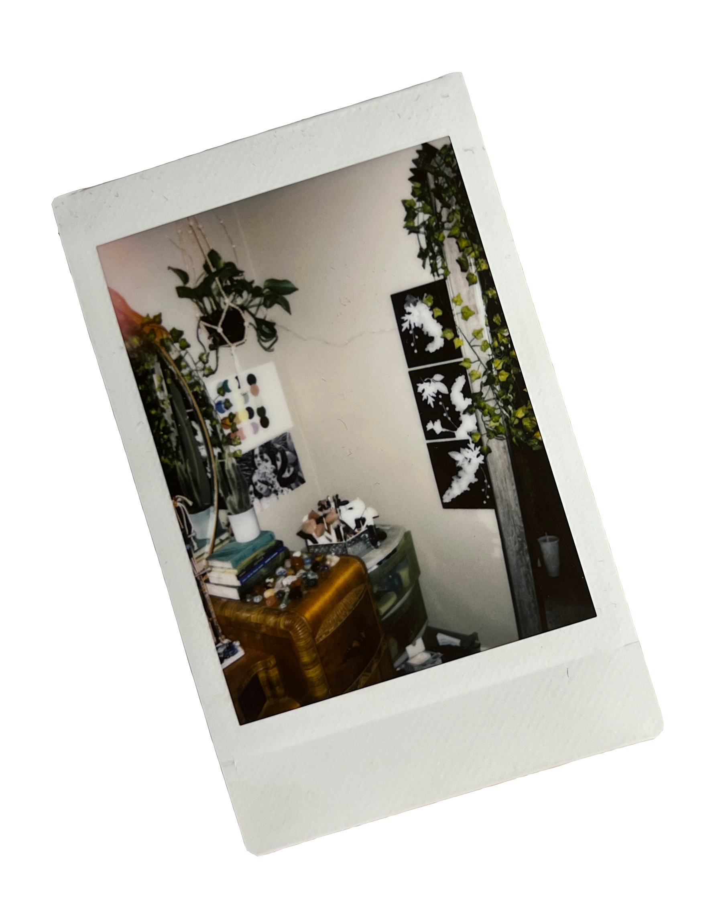
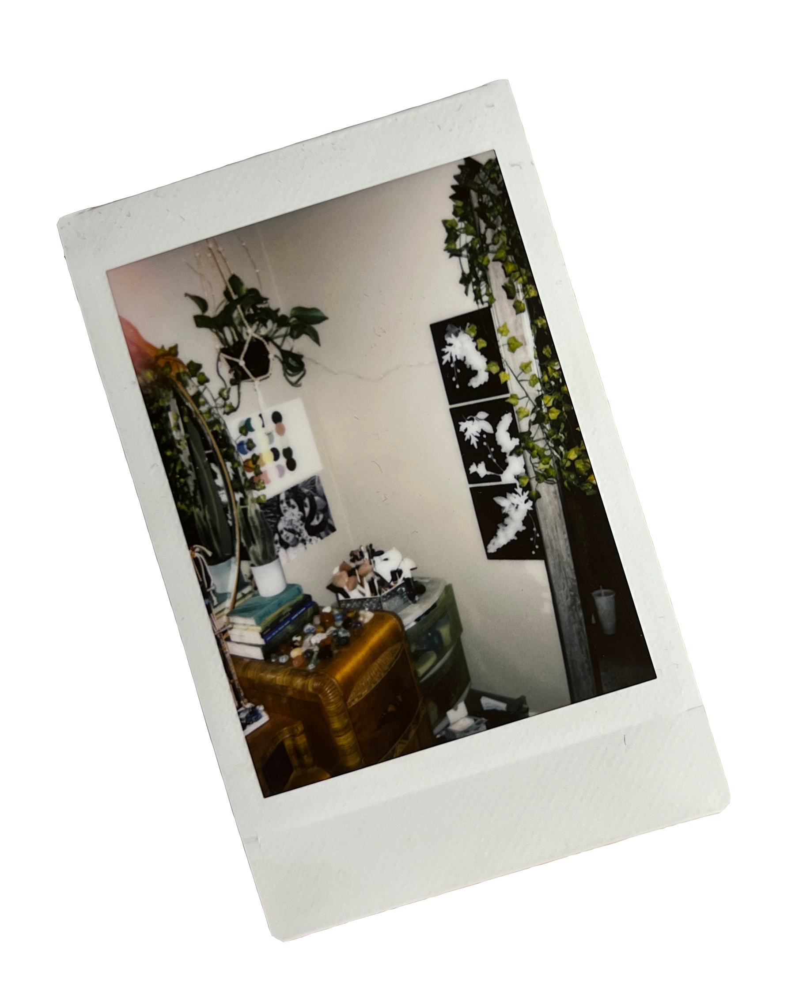

Genesis Witte
 


I am a 22 year old graphic design student receiving my BFA in Graphic Design from Illinois State University's Wonsook Kim School of Art. While design is my passion, physically creating with my hands is what grounds me. I enjoy experimenting with the intersection between fine arts and design, and like to bring aspects of physical artwork into my design work whenever possible.
I was born and raised in the Bloomington/Normal Illinois area. Usually I am keeping myself busy with a creative project, but when I am not making art, you'll usually find me at my coffee shop job. Working with the public has encouraged me greatly in my creative journey, with coworkers and guests who inspire me and give me reasons to keep creating every day.
I source my inspiration through my friends, chosen family, and the safe spaces in my life that bring me joy.